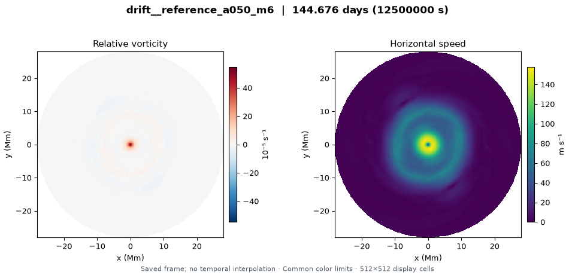

Deep jet matches the upper jet component
L_D 3,200 km · deep-jet fraction 1 · convection off
View six saved states →Deep jet at 1.5 times the upper jet component
L_D 3,200 km · deep-jet fraction 1.5 · convection off
View six saved states →Deep jet at twice the upper jet component
L_D 3,200 km · deep-jet fraction 2 · convection off
View six saved states →2,400 km · resting deep flow
L_D 2,400 km · deep-jet fraction 0 · convection off
View six saved states →2,400 km · matched deep jet
L_D 2,400 km · deep-jet fraction 1 · convection off
View six saved states →4,000 km · resting deep flow
L_D 4,000 km · deep-jet fraction 0 · convection off
View six saved states →4,000 km · matched deep jet
L_D 4,000 km · deep-jet fraction 1 · convection off
View six saved states →Interpretation
- Each run starts from the same reference circular jet and central cyclone with an imposed m=6 disturbance; none restarts a mature hexagon.
- Finite-time persistence under a sixfold seed is separate from stability to arbitrary disturbances and spontaneous selection of six sides.
- The lower jet is prescribed and static. Matched means matching the upper circular jet component only; no lower cyclone or sixfold lower boundary is imposed. Resting deep flow does not imply a flat interface.
- Assess connected jet shape, surrounding winds and coherent pattern motion together. No measured drift or stability outcome is asserted in this publication text.
- The model frame has not been registered to Saturn’s System III. Zero model-frame drift is not automatically observational stationarity; wind and longitude frames must be converted consistently.
- These are regularized QG analogues of the 2017 shallow-water setup. The strong central cyclone is intentionally retained, but lies outside a controlled small-Rossby-number QG approximation.
Field scales use only the 54 selected saved states (six per run); mode plot scale uses all saved diagnostic times.
Collection provenance